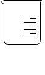
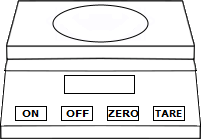

Determination of TS,TDS and TSS in water
Objective:
To determine Total Solids (TS), Total Dissolved Solids (TDS), Total Suspended Solids (TSS), Volatile Suspended Solids and Fixed Suspended Solids in the given water sample.
Apparatus used:
Weighing scale, Petri dish, Ashless filter papers, Membrane filter holder, Crucible, Oven, Vacuum pump, Beaker, Desiccator, Pipette etc.
 Description
Total Dissolved Solids (TDS) is the amount of combined contents of all inorganic and organic substances contained in a liquid in molecular, ionized or micro-granular (colloidal sol) suspended form.
Total Suspended Solids (TSS) are solids that can be trapped using a filter in water. TSS can include a wide variation in material, such as silt, decaying plant and animal matter, industrial wastes and sewage.
Total Solids (TS) can be found by summation of TSS and TDS.
Description
Total Dissolved Solids (TDS) is the amount of combined contents of all inorganic and organic substances contained in a liquid in molecular, ionized or micro-granular (colloidal sol) suspended form.
Total Suspended Solids (TSS) are solids that can be trapped using a filter in water. TSS can include a wide variation in material, such as silt, decaying plant and animal matter, industrial wastes and sewage.
Total Solids (TS) can be found by summation of TSS and TDS.
Total Suspended Solids (TSS),
Total Dissolved Solids(TDS)
and
Total Solids (TS)
Take 50ml of water sample in a beaker.



Note down the weight of the crucible, petri dish and filter paper.
Place the filter paper in the membrane filter and pour 50ml of sample from top of filter slowly.
Take out the filter paper from the filter and allow it to dry in hot air oven at 105°C over night.


Collect the sample that passes through the filter paper in a clean crucible and allow it to dry in hot air oven at 103°C to 105°C over night.
After 24 hours
Take out petri dish and crucible from the hot air oven and allow it cool in desiccator.


Take out petri dish and crucible from the desiccator after 24 hours. Then note down the final weight of the ash less filter paper and final weight of the crucible.
Observations:
Volume of sample taken = 50ml
Total Suspended Solids, (TSS):
Weight of empty petri dish + filter paper (W1) =
Weight of empty petri dish + filter paper + solids (W2) =
Total Suspended Solids, (TSS) = mg/l
TSS = (W2 - W1)⁄Volume of the sample x 106
Total Dissolved Solids, (TDS):
Weight of empty crucible (W3) =
Weight of empty crucible + solids (W4) =
Total Dissolved Solids, (TDS) = mg/l
TDS = (W4 - W3)⁄Volume of the sample x 106
✔
✘
✔
✘
Observations:
Total Solids, (TS):
Total Suspended Solids, (TSS) =
Total Dissolved Solids, (TDS) =
Total Solids, (TS) = mg/l
TS = TSS + TDS
✔
✘
Fixed Suspended Solids (FSS)
and
Volatile Suspended Solids (VSS)
Ignite the filter paper with the solids in a muffle pot at 600°C in a muffle furnace.


Click on door handle to open the muffle furnace door.
Take out the muffle pot from the desiccator and then note down the weight of it.
Observations:
Volume of sample taken = 50ml
Fixed Suspended Solids (FSS):
Weight of empty muffle pot (W5) =
Weight of empty muffle pot + fixed solids (W6) =
Fixed Suspended Solids = mg/l
FSS = (W6 - W5)⁄Volume of the sample x 106
Volatile Suspended Solids, (VSS):
Total Suspended Solids (TSS) =
Volatile Suspended Solids, (VSS) = mg/l
VSS = TSS - FSS
✔
✘
✔
✘
Inference:
What is the acceptable range of Total Dissolved Solids in drinking water?
1800mg/l - 2400mg/l 1200mg/l - 1800mg/l 500mg/l - 1200mg/l <500mg/l